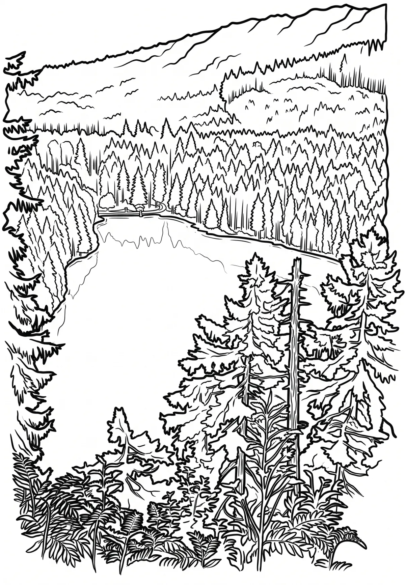

Černé jezero
Plzeňský kraj · 1008 m n. m.

přírodní památka · #009
Černé jezero (německy Schwarzer See) je největší ledovcové jezero na Šumavě a zároveň i největší jezero v České republice, pokud nepočítáme vodní plochy vzniklé s přispěním člověka. Má rozlohu 18,47 hektaru. Leží v nadmořské výšce 1008 metrů a jeho maximální hloubka dosahuje 39,8 metru. Vzniklo v poslední době ledové.